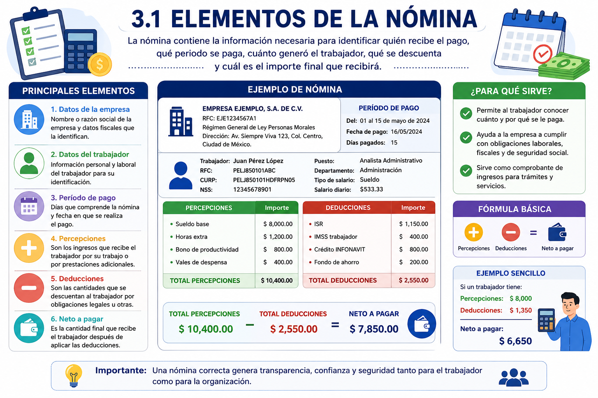
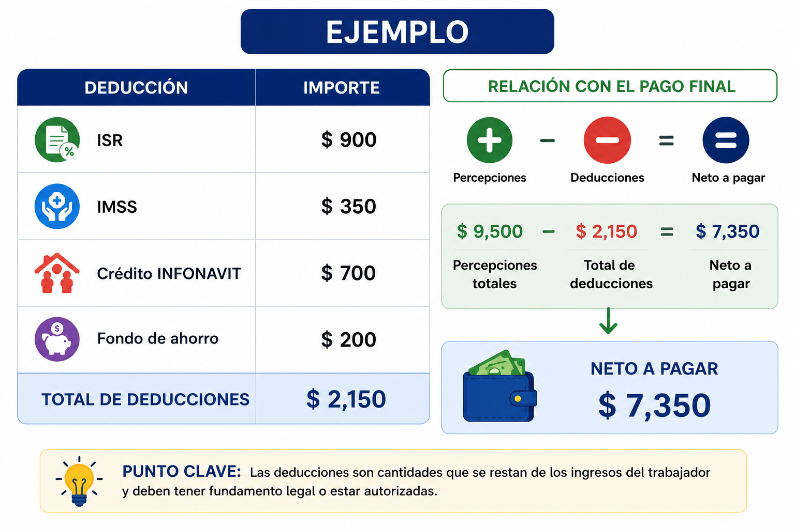
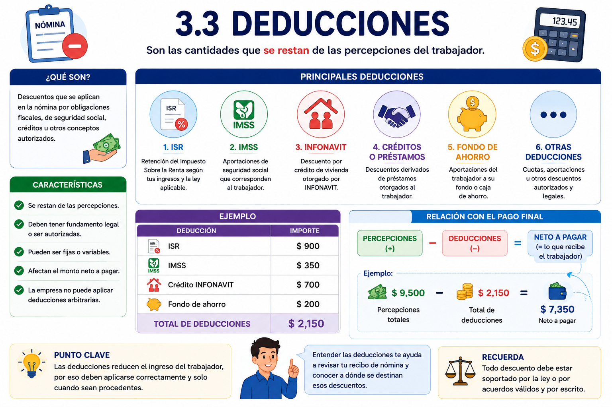
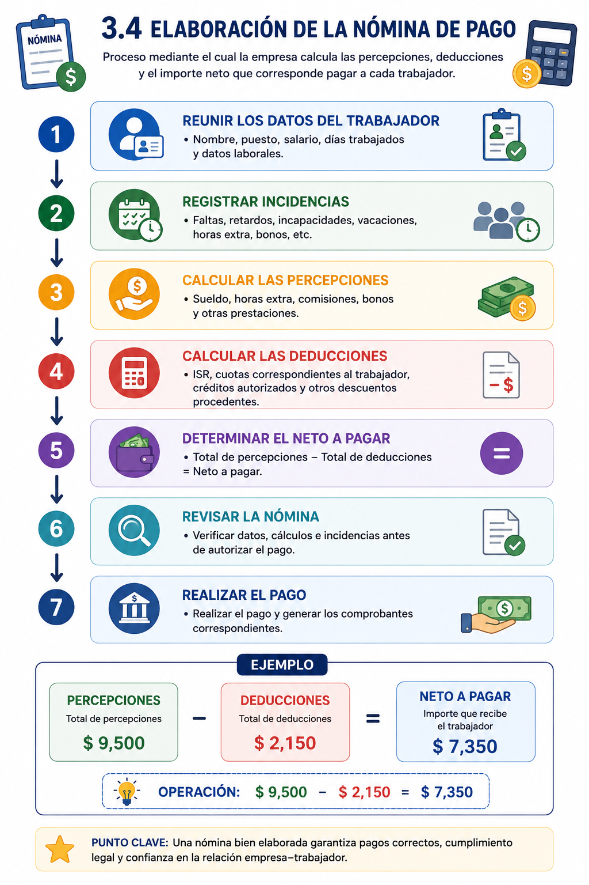

UNIDAD 3. NÓMINAS
UNIDAD 3. NÓMINAS
Introducción
La nómina es el documento y proceso mediante el cual una organización determina y registra las cantidades que debe pagar a sus trabajadores durante un periodo determinado.
En ella se identifican los ingresos del trabajador —percepciones—, los descuentos o retenciones —deducciones— y finalmente el neto a pagar. Esta información también es fundamental para el cumplimiento de las obligaciones laborales, fiscales y de seguridad social de la empresa.
Objetivo de la unidad
Comprender los principales elementos que integran una nómina, identificando las percepciones y deducciones aplicables, para conocer el procedimiento básico de elaboración de una nómina de pago.
¿Qué aprenderá el alumno?
Al finalizar la unidad, el alumno será capaz de identificar los componentes de una nómina, distinguir entre percepciones y deducciones y comprender cómo ambos conceptos intervienen en la determinación del pago neto del trabajador.
TEMARIO UNIDAD 3
TEMARIO UNIDAD 3
3. NOMINAS
3.1 Elementos
3.2 Percepciones
3.3 Deducciones
3.4 Elaboración de la nómina de pago
3.1 Elementos de la nómina
3.1 Elementos de la nómina
Una nómina contiene la información necesaria para identificar quién recibe el pago, qué periodo se está pagando, cuánto generó el trabajador, qué cantidades se descuentan y cuál es el importe final que recibirá.
Entre sus principales elementos encontramos:
Datos de la empresa: nombre o razón social y datos fiscales correspondientes.
Datos del trabajador: nombre, RFC, CURP, número de seguridad social, puesto y demás información laboral necesaria.
Periodo de pago: señala los días que comprende la nómina y la fecha en que se realiza el pago.
Percepciones: cantidades que representan ingresos para el trabajador, como sueldo, horas extraordinarias, bonos, comisiones, aguinaldo o prima vacacional, según corresponda.
Deducciones: cantidades que se descuentan al trabajador, como ISR, cuotas correspondientes al IMSS u otros descuentos procedentes.
Neto a pagar: cantidad final que recibe el trabajador después de aplicar las deducciones.
Fórmula básica
Total de percepciones − Total de deducciones = Neto a pagar
Ejemplo sencillo
Si un trabajador tiene:
Percepciones: $8,000
Deducciones: $1,350
Entonces:
$8,000 − $1,350 = $6,650
Por lo tanto, $6,650 es el neto a pagar.
Pregunta:
¿Por qué el salario que aparece contratado no necesariamente coincide con la cantidad que finalmente recibe el trabajador?

3.2 Percepciones
3.2 Percepciones
Las percepciones son las cantidades económicas que recibe el trabajador como resultado de su relación laboral. Constituyen la parte positiva de la nómina y pueden originarse por el trabajo realizado, prestaciones, incentivos u otros conceptos.
Principales tipos de percepciones
1. Sueldo o salario
Es la remuneración ordinaria que recibe el trabajador por los servicios prestados durante un periodo determinado.
2. Horas extraordinarias
Pago que puede corresponder cuando el trabajador labora tiempo adicional a su jornada ordinaria, conforme a las condiciones y límites establecidos por la legislación laboral.
3. Comisiones
Cantidades que se otorgan normalmente en función de ventas, operaciones o resultados alcanzados.
4. Bonos e incentivos
Pagos adicionales relacionados, por ejemplo, con productividad, puntualidad, asistencia, cumplimiento de metas o desempeño.
5. Aguinaldo
Prestación anual que debe recibir el trabajador conforme a la legislación laboral aplicable.
6. Prima vacacional
Cantidad adicional relacionada con el periodo de vacaciones del trabajador.
7. Otras percepciones
Dependiendo de la empresa y de las condiciones laborales, pueden existir premios, gratificaciones y otras prestaciones económicas.
Punto clave para el alumno
Percepción = cantidad que se suma a los ingresos del trabajador.
Esto es importante porque en el siguiente tema veremos el proceso contrario: las deducciones, que son cantidades que se restan para determinar posteriormente el neto a pagar.
Pregunta para reflexionar
¿Todas las percepciones que recibe un trabajador tienen necesariamente el mismo tratamiento fiscal y de seguridad social?
3.3 Deducciones
3.3 Deducciones
Las deducciones son las cantidades que se restan de las percepciones del trabajador al elaborar la nómina. Pueden derivarse de obligaciones fiscales, de seguridad social, créditos, acuerdos con el trabajador u otros conceptos legalmente procedentes.
Principales deducciones
1. ISR
Es la retención del Impuesto Sobre la Renta que corresponde al trabajador de acuerdo con sus ingresos y las disposiciones fiscales aplicables.
2. Cuotas de seguridad social
Corresponden a las aportaciones que procedan a cargo del trabajador relacionadas con su aseguramiento ante el IMSS.
3. Crédito INFONAVIT
Cuando el trabajador cuenta con un crédito de vivienda, pueden realizarse las retenciones correspondientes mediante la nómina.
4. Créditos o préstamos
Pueden incluir descuentos derivados de préstamos otorgados al trabajador, siempre que correspondan conforme a las disposiciones y condiciones aplicables.
5. Fondo o caja de ahorro
Cuando existe este esquema en la organización, el trabajador puede realizar aportaciones mediante descuentos periódicos en su nómina.
6. Otras deducciones autorizadas
Dependiendo de cada caso, pueden existir otros descuentos permitidos o autorizados, como cuotas o aportaciones previamente establecidas.

Punto clave
Deducción = cantidad que se resta de los ingresos del trabajador.
Es importante que el alumno comprenda que una empresa no puede descontar cantidades arbitrariamente; las deducciones deben tener fundamento legal o corresponder a conceptos procedentes y autorizados.
Pregunta de reflexión
¿Qué consecuencias podría tener para una empresa aplicar incorrectamente una deducción en la nómina de sus trabajadores?

3.4 Elaboración de la nómina de pago
3.4 Elaboración de la nómina de pago
La elaboración de la nómina es el proceso mediante el cual la empresa calcula las percepciones, deducciones y el importe neto que corresponde pagar a cada trabajador durante un periodo determinado.
Proceso básico:
- Reunir los datos del trabajador: nombre, puesto, salario, días trabajados y datos laborales.
- Registrar incidencias: faltas, retardos, incapacidades, vacaciones, horas extra, bonos, etc.
- Calcular las percepciones: sueldo, horas extra, comisiones, bonos y otras prestaciones.
- Calcular las deducciones: ISR, cuotas correspondientes al trabajador, créditos autorizados y otros descuentos procedentes.
- Determinar el neto a pagar:
Total de percepciones − Total de deducciones = Neto a pagar. - Revisar la nómina: verificar datos, cálculos e incidencias antes de autorizar el pago.
- Realizar el pago y generar los comprobantes correspondientes.
